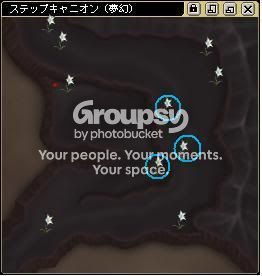

หน้า 4 จากทั้งหมด 6

โพสต์แล้ว:
อังคาร 09 มี.ค. 2010 10:38 pmโดย ECO
wind7 เขียน:(ps)smart เขียน:wind7 เขียน:ชุดแมวทำยังไงเหรอครับ ผมจำไม่ได้

ต้องทำเควสแมวโซระก่อนนะครับ
ถ้าเคยทำแล้วได้ชุดแล้ว ให้เอาออกตัวใ่ส่เนโกะแล้วไปคุยจะได้เสื้อตัวนั้นมา
เงื่อนไข
เหมือนกับว่าต้องเวล 30 และก็ต้องส่งเควสด้วยนะสำหรับอีกตัวที่จะไปเอาทำนองนี้
ต้องเตรียมของทำด้วยหรือเปล่าครับ พวก กรรไกร เข็ม พวกนั้น
ไม่นะครับ ไปคุยกับไทนี่ในร้านตัดเย็บน่ะ
โพสต์แล้ว:
อังคาร 09 มี.ค. 2010 10:39 pmโดย ECO
wind7 เขียน:(ps)smart เขียน:wind7 เขียน:ชุดแมวทำยังไงเหรอครับ ผมจำไม่ได้
ต้องทำเควสแมวโซระก่อนนะครับ
ถ้าเคยทำแล้วได้ชุดแล้ว ให้เอาออกตัวใ่ส่เนโกะแล้วไปคุยจะได้เสื้อตัวนั้นมา
เงื่อนไข
เหมือนกับว่าต้องเวล 30 และก็ต้องส่งเควสด้วยนะสำหรับอีกตัวที่จะไปเอาทำนองนี้
แมวทุกตัวทำครบหมดครับ
เคยทำชุด เนโกะ AI มา 1 ชุดนานมาและ

เคยได้ยินมาว่า ทำได้แค่ 3 ชุด
แล้วต้องเตรียมของทำด้วยหรือเปล่าครับ พวก กรรไกร เข็ม ผ้า ??
เตรียมตังแค่ 10k ก็พอครับ คุยกับหมี+ใส่แมว ก็เรียบร้อย
ที่ว่าทำได้สามชุดก็เพราะัทำได้ตัวละครละครั้งน่ะครับ
โพสต์แล้ว:
อังคาร 09 มี.ค. 2010 10:47 pmโดย ECO
ขอบคุณทุกท่านสำหรับคำแนะนำครับ เดี๋ยวลองทำดู
โพสต์แล้ว:
อังคาร 09 มี.ค. 2010 10:49 pmโดย ECO
สำหรับใครที่ทำไมไ่ด้ลองเข้าๆๆออกๆหลายๆๆรอบดุสิครับ
ผมเข้าๆๆออกจนไม่มีคนเหลือในห้องแต่งตัวอะถึงจะเริ่มเควสได้
โพสต์แล้ว:
อังคาร 09 มี.ค. 2010 11:52 pmโดย ECO
ใครเลเวลโลกโดฯน้อยจะทำเควสนี้ลำบากเพราะแมพเก็บดอกไม้ มอนชุม
ทางแก้ที่ได้ผลสุดๆคือ
จงขี่หนอนซะ 
โพสต์แล้ว:
พุธ 10 มี.ค. 2010 12:20 amโดย ECO
แปลงร่างก็เป้นอมตะแล้วครับ 5นาทียังไงก้ทัน
โพสต์แล้ว:
พุธ 10 มี.ค. 2010 1:00 amโดย ECO
bosskiss เขียน:แปลงร่างก็เป้นอมตะแล้วครับ 5นาทียังไงก้ทัน
ทำไมเราไม่ทันอ่ะ 4-5 รอบแหนะกว่าจะผ่าน

จากเวลน้อยอยู่แล้ว ยิ่งน้อยเลย
โพสต์แล้ว:
พุธ 10 มี.ค. 2010 1:16 amโดย ECO
ดูเหมือนแมวขาวจะบั๊ก..
นี่เอามาต่อยหนอนร่วม ชม. แล้ว สเตตัสไม่ขึ้นซักค่าเลย หนำซ้ำสกิลไม่ใช้อีกต่างหาก...
โพสต์แล้ว:
พุธ 10 มี.ค. 2010 1:17 amโดย ECO
ไม่อัพครับแต่ที่แน่ๆๆ
แมวแฝดมันใช้สกิลภาษาญี่ปุ่นอะไรไม่รู้อะ สกิลใหม่ปะ?
โพสต์แล้ว:
พุธ 10 มี.ค. 2010 3:46 amโดย ECO
ขอบคุณมากคร้าบบ
โพสต์แล้ว:
พุธ 10 มี.ค. 2010 3:54 amโดย ECO
เพื่อนบอกมาว่า ถ้าไปคุยที่3จุดนี้ จะทำให้มอนหายทั้งหมดอะคะ
เป็นดอกจริงทั้ง3ดอก
เหมือนว่าจะเป็นตำแหน่งประจำ ไม่ได้แรนดอม ลองดูนะคะ
ไม่แน่ใจเหมือนกันนะคะ ใครลองแล้วช่วยบอกทีนะ

โพสต์แล้ว:
พุธ 10 มี.ค. 2010 4:46 amโดย ECO
4 ค่ะ
แมพบนสุดอีกดอกนึ่ง
(คิดว่านะ)
โพสต์แล้ว:
พุธ 10 มี.ค. 2010 9:28 amโดย ECO
ของผมเจอจนชนะ บนสุดเลยล่ะครับ
แต่โชคดีทำแมวตัวนี้กะไว้บนบ้านอย่างเดียว ไม่ได้กะฝึก
โพสต์แล้ว:
พุธ 10 มี.ค. 2010 11:48 amโดย ECO
Pet รถเกวียนลากตั๋วใหม่ ก็ฝึกไม่อัพ

โพสต์แล้ว:
พุธ 10 มี.ค. 2010 11:49 amโดย ECO
มาแล้วเหรอ